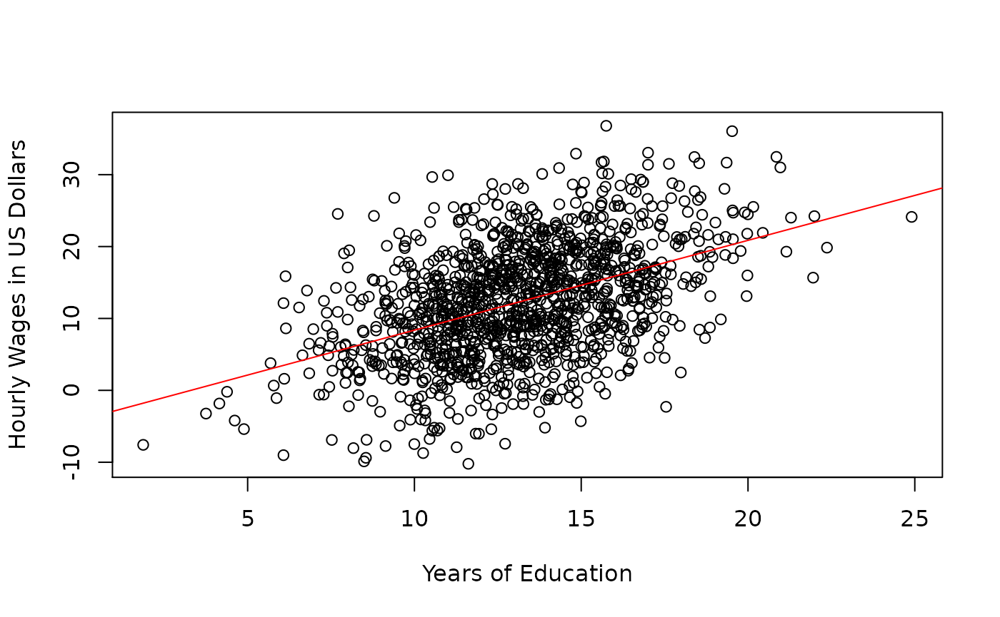

vignettes/tests/test-simple-population-example.Rmd
test-simple-population-example.Rmd
# The Simple Linear Regression Model: The Population Regression Model Example {#simple-population-example}The jeksterslabRlinreg package has functions to derive expectations for regression models.
jeksterslabRlinreg::mutheta() returns the expected values, that is, the model-implied mean vector.jeksterslabRlinreg::Sigmatheta() returns the covariance expectations, that is, the model-implied variance-covariance matrix.In this hypothetical example, we assume that we have population data and we are interested in the association between wages and education. The regressor variable is years of education. The regressand variable is hourly wage in US dollars. The intercept is the predicted wage of an employee with 0 years of education. The slope is the increase in hourly wage in US dollars for one year increase in education.

The the following vectors represent the parameters of the simple linear regression model.
\[\begin{equation} \boldsymbol{\theta}_{\text{mean structure}} = \begin{bmatrix} \beta_1 \\ \mu_x \end{bmatrix} \end{equation}\]
\[\begin{equation} \boldsymbol{\theta}_{\text{covariance structure}} = \begin{bmatrix} \beta_2 \\ \sigma_{\varepsilon}^{2} \\ \sigma_{x}^{2} \end{bmatrix} \end{equation}\]
| Variable | Description | Notation | Value |
|---|---|---|---|
beta1 |
Intercept | \(\beta_1\) | -4.119577 |
mux |
Mean of \(x\) | \(\mu_x\) | 13.137516 |
| Variable | Description | Notation | Value |
|---|---|---|---|
beta2 |
Slope | \(\beta_2\) | 1.249177 |
sigma2epsilon |
Variance of \(\varepsilon\) | \(\sigma_{\varepsilon}^{2}\) | 50.442669 |
sigma2x |
Variance of \(x\) | \(\sigma_{x}^{2}\) | 8.185725 |
There are times when the intercept does not lend to a meaningful interpretation. A negative wage corresponding to zero years of education does not really make a lot of sense. The value that is interesting in this case is the slope. The slope represents 1.2491767 US dollar increase in hourly wages given 1 additional year of education.
The expected values are derived using jeksterslabRlinreg::mutheta().
result_mutheta <- jeksterslabRlinreg::mutheta(
beta = beta,
muX = mux
)| \(\mu\) | |
|---|---|
| y | 12.29150 |
| x | 13.13752 |
The covariance expectations are derive using jeksterslabRlinreg::Sigmatheta().
result_Sigmatheta <- jeksterslabRlinreg::Sigmatheta(
slopes = beta2,
sigma2epsilon = sigma2epsilon,
SigmaX = sigma2x
)| y | x | |
|---|---|---|
| y | 63.21602 | 10.225417 |
| x | 10.22542 | 8.185725 |
The inverse, that is, deriving the parameters from the expectations can also be done using functions from the jeksterslabRlinreg package.
The regression coefficients can be derived using jeksterslabRlinreg::intercept(), and jeksterslabRlinreg::slopes() from the means and the covariances.
result_slopes <- jeksterslabRlinreg::.slopes(
SigmaX = sigma2x,
sigmayX = sigmayx
)
result_slopes
#> slopes
#> [1,] 1.249177
result_intercept <- jeksterslabRlinreg::.intercept(
slopes = result_slopes,
muy = muy,
muX = mux
)
result_intercept
#> [1] -4.119577From raw data
result_slopesfromrawdata <- jeksterslabRlinreg::slopes(
X = X,
y = y
)
result_slopesfromrawdata
#> slopes
#> education 1.249177
result_interceptfromrawdata <- jeksterslabRlinreg::intercept(
X = X,
y = y
)
result_interceptfromrawdata
#> wages
#> -4.119577Standardized slopes can also be obtained using jeksterslabRlinreg::slopesprime()
result_slopesprime <- jeksterslabRlinreg::.slopesprime(
RX = sqrt(sigma2x),
ryX = ryx
)
result_slopesprime
#> std.slopes
#> [1,] 0.1571123From raw data
result_slopesprimefromrawdata <- jeksterslabRlinreg::slopesprime(
X = X,
y = y
)
result_slopesprimefromrawdata
#> std.slopes
#> education 0.4495095The error variance can also be derived with the available information using jeksterslabRlinreg::sigma2() .
result_sigma2epsilon <- sigma2epsilon(
slopes = beta2,
sigma2y = sigma2y,
sigmayX = sigmayx,
SigmaX = sigma2x
)
result_sigma2epsilon
#>
#> 50.44267
context("Test simple-regression-ram")
test_that("result_mutheta", {
for (i in 1:nrow(result_mutheta)) {
expect_equivalent(
result_mutheta[i, 1],
mutheta[i, 1]
)
}
})
#> Test passed 🥳
test_that("result_Sigmatheta", {
for (i in 1:nrow(result_Sigmatheta)) {
for (j in 1:ncol(result_Sigmatheta)) {
expect_equivalent(
result_Sigmatheta[i, j],
Sigmatheta[i, j]
)
}
}
})
#> Test passed 🌈
test_that("results_beta", {
results_beta <- c(
result_intercept,
result_slopes
)
for (i in 1:length(results_beta)) {
expect_equivalent(
results_beta[i],
beta[i]
)
}
})
#> Test passed 🥇
test_that("results_betafromrawdata", {
results_betafromrawdata <- c(
result_interceptfromrawdata,
result_slopesfromrawdata
)
for (i in 1:length(results_betafromrawdata)) {
expect_equivalent(
results_betafromrawdata[i],
beta[i]
)
}
})
#> Test passed 😀